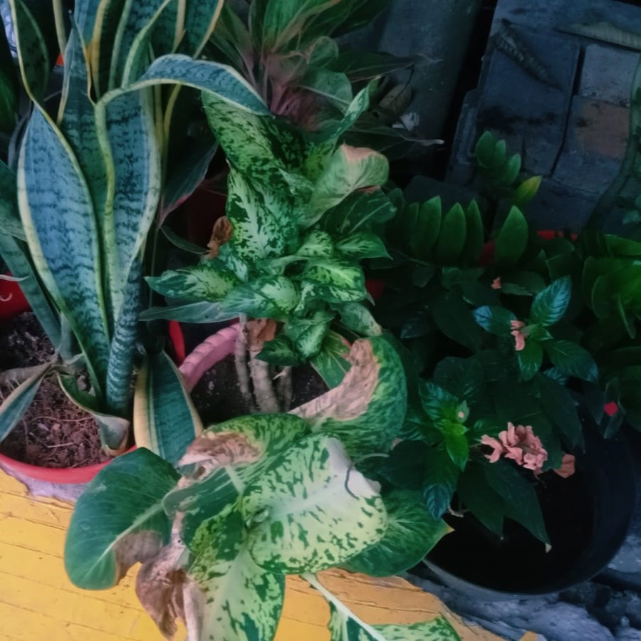

Cileungsi, 24 Mei 2024 -Kehadiran tanaman hias di rumah kini tidak hanya menjadi tren, tetapi juga menjadi bagian integral dari kehidupan sehari-hari di Perumahan Metland Cileungsi. Terlihat dari balkon hingga taman depan, dan dalam ruangan tanaman hias telah menjadi sentuhan hijau yang menyegarkan dan mempercantik lingkungan di sekitar. Pemilik rumah, yaitu Ersa, menjelaskan, "Tanaman hias tidak hanya membuat rumah lebih indah, tetapi juga memberikan suasana yang lebih sejuk dan nyaman. Mereka memberikan nuansa alami yang membuat kami merasa lebih dekat dengan alam di tengah hiruk-pikuk padatnya perkotaan." Tanaman hias yang ditanam bervariasi, mulai dari yang berukuran kecil seperti sukulen hingga tanaman merambat yang menutupi dinding, memberikan sentuhan warna dan tekstur yang memikat bagi penghuni perumahan. Beberapa rumah bahkan memiliki kebun vertikal yang memanfaatkan dinding-dinding vertikal sebagai tempat untuk menanam beragam tanaman hias. "Kami senang melihat berbagai macam tanaman hias di sekitar perumahan kami," ujar seorang tetangga sekitar. "Mereka tidak hanya menambah keindahan, tetapi juga memberikan udara yang lebih segar dan membantu menciptakan lingkungan yang lebih bersih dan sehat." Selain aspek estetika, kehadiran tanaman hias juga diyakini memiliki manfaat bagi kesejahteraan fisik dan mental penghuninya. Studi telah menunjukkan bahwa berinteraksi dengan tanaman dapat mengurangi stres, meningkatkan mood, dan bahkan meningkatkan produktivitas. Namun, di tengah antusiasme terhadap tanaman hias, beberapa penghuni juga menggaris bawahi pentingnya perawatan yang tepat untuk menjaga keindahan tanaman. "Merawat tanaman hias memang memerlukan waktu dan perhatian, tetapi hasilnya sangat memuaskan.†"Dan kami juga belajar banyak tentang perawatan tanaman dan menjadi lebih bertanggung jawab atas lingkungan tempat tinggal kami." Ujar seorang tetangga sekitar. Dengan tanaman hias yang meramaikan setiap sudut, Perumahan Metland Cileungsi telah menjadi kebiasaan yang menyejukkan bagi para penghuninya. Kehadiran tanaman hias tidak hanya menghiasi rumah-rumah, tetapi juga merangkul nilai-nilai kebersamaan, kebersihan, dan kepedulian lingkungan dalam kehidupan sehari-hari.
